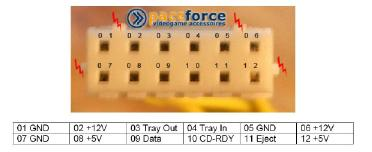

USE AN XBOX DVD DRIVE IN YOUR PC
PINOUT OF THE 12-PIN YELLOW CONNECTOR

You will have to make a regular PC power connector, and rig up a
push-button Eject (momentaty contact) switch.
Also
note that Windows must be able to detect your
Xbox DVD drive. Some Xbox drives, Philips, seem to be not
detectable by Windows. Once the drive is connected and
detected you can use a software tool to unlock the drive to read
original DVDXBOX discs.
This
"TOOL" unlocks an original Xbox DVD-ROM drive,
while attached to a PC. Now you can access an original DVDXBOX
disc from PC using tools like Clone CD. Note that it will report
many bad sectors, that's
normal. Now can can copy games without having to FTP to your
modded Xbox.
The DVD Drive from the Xbox is always a SLAVE device.
MY TEST:
I powered on Xbox, put a DISC in, then powered off.
Removed the IDE Cable and plugged it into a PC As SLAVE on Primary w/HDD
Powered on Xbox, LED Blinks RED AND GREEN
Powered on the PC
My PC Recognized mine as "THOMPSON-DVD 1.4"
Bios did search all three DVD drives for a boot disc (Was two)
I did not find it in Win Explorer, or in the Device Manager.
Was able to use the EJECT button on the Xbox to Open/Close the Tray
IDE Activity light on PC was solid RED, but HDD access still worked -
Disc always was spun-up.
Unlocker did not find it.
Tried again, placed XboxDVD Drive on Secondary IDE by itself - Disk
always spinning.
Was able to use the Xbox EJECT button to Open/Close tray
Can see IDE Activity light when oprning/closing the tray - Tries to
read the disc.
Did not see a DVD drive in Win Explorer or the Device Manager
Did a RESCAN for Plug-n-Play hardware - found nothing.
Put in aVCD - Spun up, and then spun down - Game disc kept it spun-up.
Audio CD also kept it Spun Up.
Put in a DVD-R Movie - Stayed Spun Up.
Rebooted with a DVD Movie in - BIOS sees it - Attempts Boot from the
drive - Still nothing in WinXP.
Put a WinXP install disc in - Spun Down - Rebooted to see if the PC
would boot from it.
Did not boot from the CD - Drive stayed Spun up.
Changed position on IDE Cable, still no recognition in WinXP.
Could not manually install a DVD Drive from the control pannel.
THIS DID NOT WORK FOR ME!!!
GET THE TOOL
ALTERNATE
WAY TO CONNECT TO PC
Easiest to test this is probably to connect the IDE cable of your Xbox
DVD drive to your PC, while keeping the 12-pin cable for power/eject
connected from the Xbox mainboard, to the Xbox DVD drive as normal.
PC is off at this point.
Power on the Xbox, place a game disc into the DVD drive, then power it
off. Remove the IDE cable from the Xbox to the DVD drive, then
connect the IDE cable from a PC into the DVD drive, then power Xbox on.
When you power up the XBOX, while the IDE cable is in the PC, you will
get Error 11, which is NO DVD found. The power to the DVD drive
will/should still be there, you just won't be able to eject the tray,
but the disc is in the drive.
Turn on your PC and see if it detects the drive, then run the tool.
I have
not, and will not test this new tool, as I have no problems making
backups the traditional way, it just takes longer.